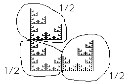

| This fractal can be decomposed into three pieces: |
 |
 |
|
| Note the top and bottom left pieces have the same orientation
as the entire fractal, while the bottom right piece is reflected across a vertical
line. |
| Keeping in mind that our transformation rules allow only reflections across
the x- and y-axes, some care must be taken with the translation after the reflection. |
| Click the picture to see a derivation fo the rules. |
|